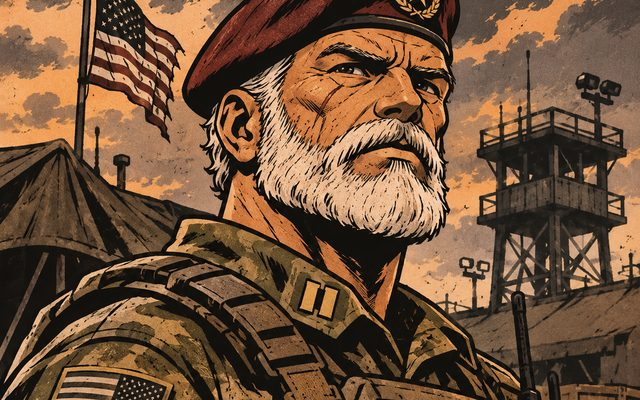
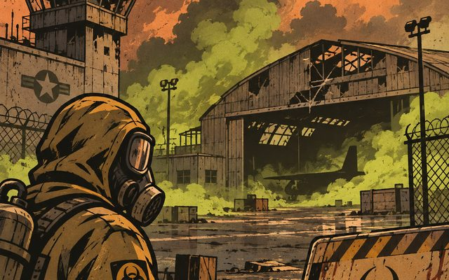
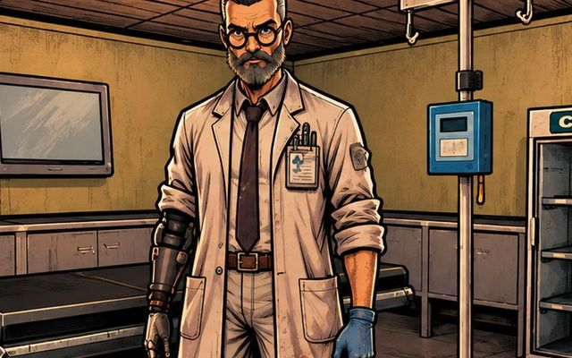
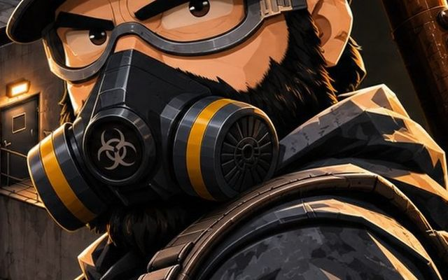

Exclusivo VGSYS-01
Zonas Tóxicas
Áreas tomadas por gás venenoso. Entre com proteção, ou não saia de lá.
Operacional
Knox County, 1993. Febre, tosse, hospitais lotados. Era apenas uma gripe. Pelo menos era isso que diziam.
Agora as fronteiras estão fechadas e os mortos andam. Você é apenas uma pessoa comum. E precisa sobreviver.
Histórias, grupos e decisões que importam.
Recursos escassos. Inverno sem piedade.
Zonas tóxicas e áreas infestadas.
Brasileira, ativa e com staff presente.
O Velha Guarda é um servidor brasileiro de roleplay em Project Zomboid, rodando na Build 42. Cada jogador é um sobrevivente com passado, medos e escolhas, tentando continuar vivo num mundo que acabou.
Comida acaba, o inverno chega e a horda nunca para. Alianças se formam, traições acontecem, e a administração acompanha tudo de perto, criando eventos que mantêm o mundo vivo.
Mods desenvolvidos pela própria equipe para deixar o apocalipse mais perigoso e o roleplay mais rico.
Áreas tomadas por gás venenoso. Entre com proteção, ou não saia de lá.
Regiões com tipos diferentes de infectados, que voltam a lotar as ruas com o tempo.
Tranque sua base com cadeados de código. Só entra quem sabe os números.
Algemas e abraçadeiras para render, prender e levar prisioneiros.
Três etapas separam você do fim do mundo.
Avisos, suporte e a comunidade ficam lá. Acessar
Conheça as regras de RP e a história antes de criar seu personagem.
Use as instruções do Discord e faça sua WL.
Boletins da administração sobre atualizações, eventos e novidades.

Por determinação do comando militar, fica requisitada a apresentação de todo o pessoal civil atualmente presente no Condado de Knox no local conhecido como Refúgio.

O alto comando americano ordenou um ataque de artilharia contra a Base Aérea Nellis, deixando toda a região tomada pelo novo agente asfixiante CLX-01.

O primeiro grande evento do servidor aconteceu no Bunker. Obrigado a todos os sobreviventes que participaram. Fiquem de olho no Discord para os próximos.

Novas áreas contaminadas foram marcadas no mapa. Respirar ali sem proteção tem consequências.
Ficou alguma dúvida? Chama a gente no Discord, a equipe responde por ticket.
Abrir ticketSim. É preciso ter o Project Zomboid na Steam, na Build 42. Os mods do servidor são baixados automaticamente ao conectar.
Entre no nosso Discord e siga as instruções do canal de whitelist. Depois da aprovação, você recebe o acesso ao servidor.
Pode. Leia as regras de RP e a lore com calma. O mais importante é interpretar seu personagem e respeitar a história dos outros.
Só com motivação dentro do RP. KOS, RDM e RVM são proibidos, e assaltos precisam ser gravados e enviados por ticket. Veja a regra 8.
O servidor utiliza principalmente o VOIP para o RP, mas há a possibilidade de utilizar o chat, se necessário.
Abra um ticket no Discord e entre em contato para receber sua tag e a permissão para divulgar sua live.
Prints, bastidores, eventos e as melhores histórias dos sobreviventes. Marque a gente nas suas capturas de tela.
Seguir no Instagram